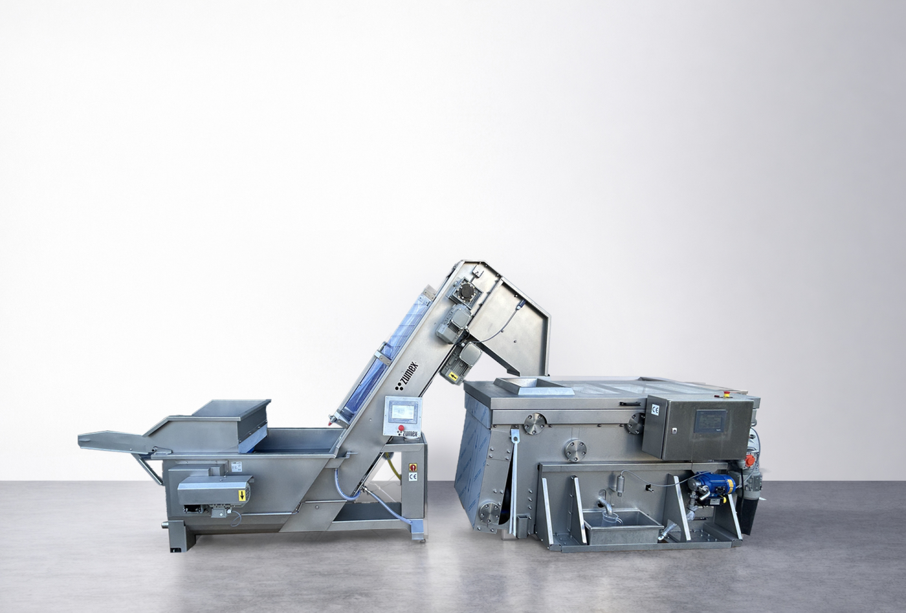
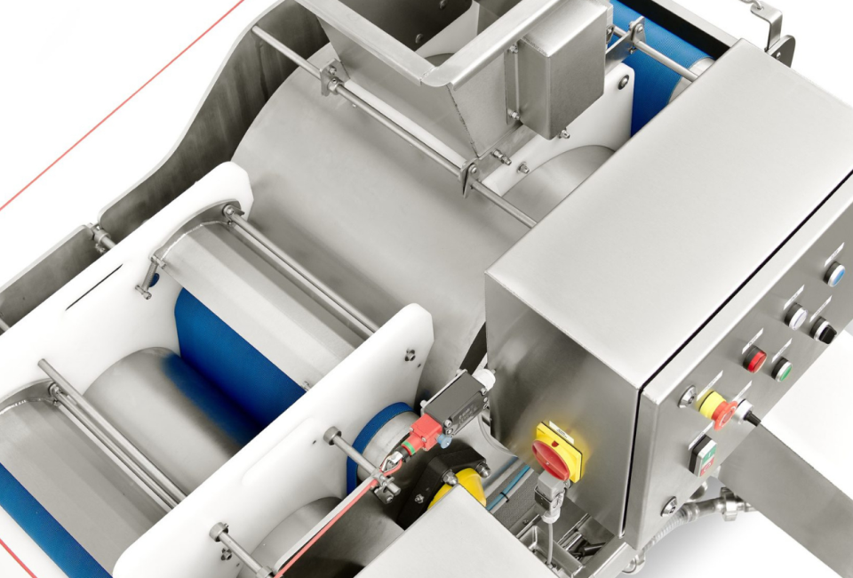

Průmyslové
ZBP
Plynulá výroba, kapka za kapkou.
Kontinuální pásové lisy pro výrobu ovocných a zeleninových šťáv. Tři velikosti umožňují zvolit kapacitu podle vašeho provozu.
Poptat tento produktCenu a dostupnost vám potvrdíme podle konfigurace.
400 kg/hZBP 400
700 kg/hZBP 700
1 100 kg/hZBP 1100
Navržen pro váš provoz.
ZBP je kontinuální pásový lis pro průmyslové zpracování ovoce a zeleniny. Plynulý průchod suroviny je vhodný pro linky, které potřebují souvislý přísun šťávy a stabilní návaznost na další výrobní kroky.
Řadu tvoří ZBP 400, 700 a 1100. Rychlost pásu lze regulovat frekvenčním měničem; integrované čerpadlo a nádrž zjednodušují začlenění do technologie. Velikost lisu vybírejte podle množství připravené suroviny.
Tři výkonové velikosti.
Pro integraci do průmyslové linky.


VYBERTE SI PROVEDENÍ
Jedna řada. Vaše konfigurace.
ZBP 400
Pásový lis musí výkonově navazovat na mytí a drcení. Pro návrh linky připravte druhy surovin, plánovaný hodinový objem a způsob dalšího zpracování šťávy.
Poptat variantuZBP 700
Pásový lis musí výkonově navazovat na mytí a drcení. Pro návrh linky připravte druhy surovin, plánovaný hodinový objem a způsob dalšího zpracování šťávy.
Poptat variantuZBP 1100
Pásový lis musí výkonově navazovat na mytí a drcení. Pro návrh linky připravte druhy surovin, plánovaný hodinový objem a způsob dalšího zpracování šťávy.
Poptat variantuFotografie jsou ilustrační pro danou řadu. Výbava a technické parametry se mohou lišit podle varianty.
PODROBNĚ A PŘEHLEDNĚ
Technické parametry.
- ZBP 400 — kapacita
- 400 kg/h
- ZBP 700 — kapacita
- 700 kg/h
- ZBP 1100 — kapacita
- 1 100 kg/h
- Příkon 400 / 700 / 1100
- 1,5 / 1,5 / 2 kW
- Hmotnost 400 / 700 / 1100
- 620 / 890 / 950 kg
- Regulace
- Frekvenční měnič
- Výbava
- Integrovaná nádrž a čerpadlo
- Přípojky
- Elektřina, voda, stlačený vzduch
Údaje výrobce pro uvedené provedení. Výkon závisí na surovině a konfiguraci. Zdroj: Zumex ↗
Co zvážit při výběru
Pásový lis musí výkonově navazovat na mytí a drcení. Pro návrh linky připravte druhy surovin, plánovaný hodinový objem a způsob dalšího zpracování šťávy.
Probrat vhodnou konfiguraci ↗VŠE PODSTATNÉ PO RUCE
Technické podklady.
Podrobnosti, dostupné příslušenství a materiály výrobce.